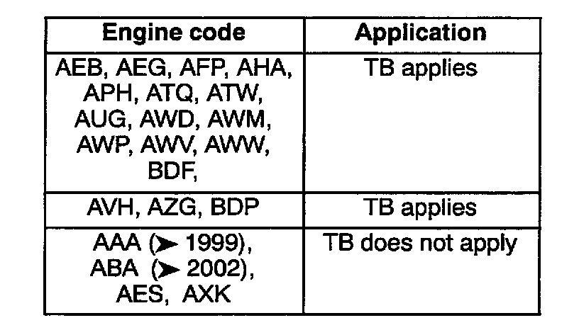
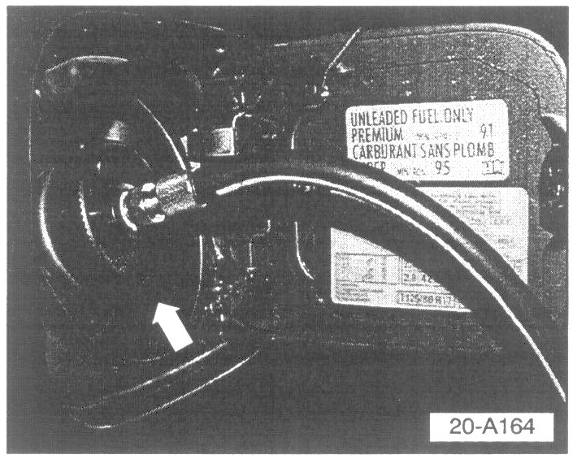
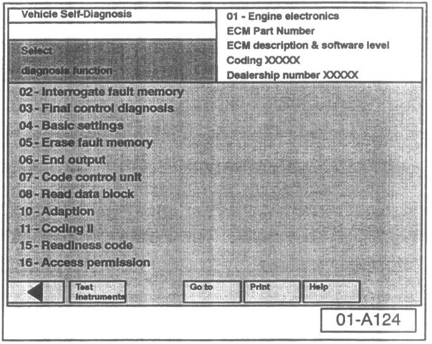
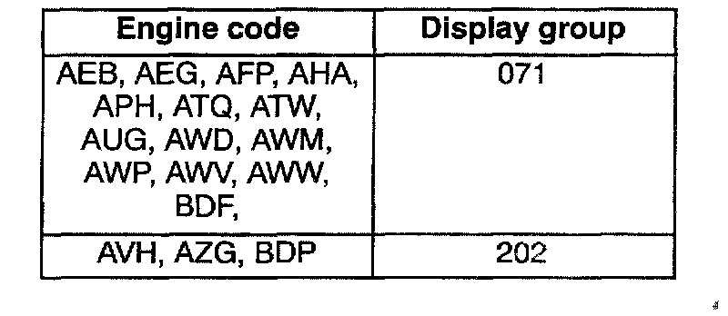
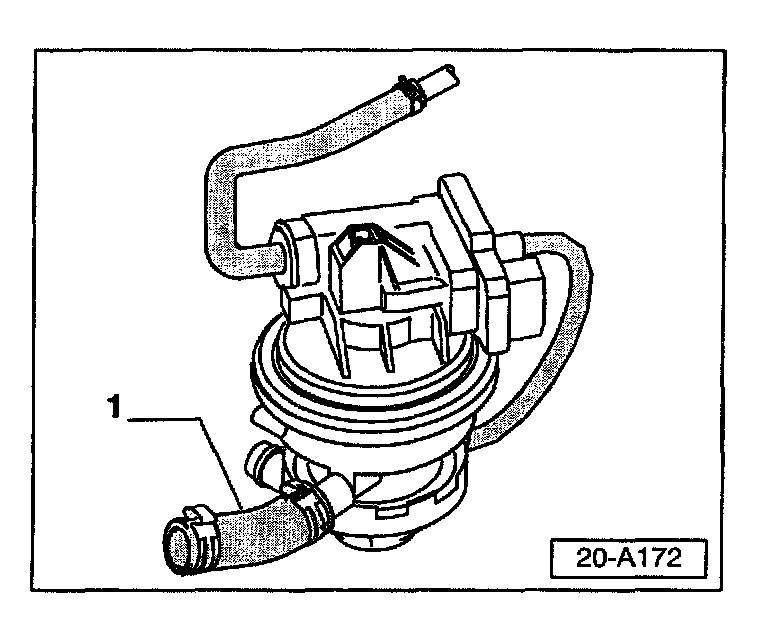
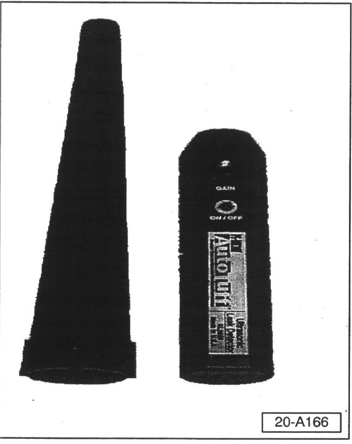

Emissions - Evaporative Emissions System Testing
Group: 20Number: 03-02
Date: May 21, 2003
Subject:
Evaporative Emissions (EVAP) System, Checking
Using the KLI 9210 EVAP System Tester
Model(s):
All with Leak Detection Pump (LDP) 1997 --> 2003
(see Eng. Code Application Table)

Service
Introduction
The KLI 9210 EVAP tester allows testing using nitrogen to pressurize the EVAP system, and a smoke generator or ultrasonic tester to locate the source of EVAP system concerns.
This Technical Bulletin outlines general use of the EVAP Tester. It is intended as a guideline, as EVAP systems vary between models.
Tools required
^ VAS 5051 or VAS 5052 diagnostic tester
^ KLI 9210 EVAP system tester (set to 14 in. H20)
^ Light source (for viewing smoke)
^ Special Tool No. 3094 or equivalent
EVAP system, testing using KLI 9210 EVAP system tester
- Perform KLI 9210 EVAP system tester self-test (see tester instructions).
KLI 9210 tester, calibrating
Determine vehicle leak threshold:
^ Up to and including M.Y. 1999: leak threshold = 0.040 in.
^ From M.Y. 2000: leak threshold = 0.020 in.

- Attach test hose to appropriate pre-set port (black arrows).
- Turn control valve from "Hold" to "Test".
- Set flow meter flag (white arrow) at indicated value on flow meter.
- Turn control valve to "Hold"; remove test hose.
Fuel cap, testing
- Remove fuel cap.
- Connect fuel cap receiver to hose.
- Screw fuel cap tightly to cap receiver.
- Turn control valve to "Test".
- Read flow meter on tester.
If no flow is indicated:
- Proceed to "LDP -V144-, checking for internal leaks".
If flow is indicated:
- Replace fuel cap and re-test.
- Proceed to "LDP -V144-, checking for internal leaks".
LDP -V144-, checking for internal leaks
Basically, in the following procedure you will fill the EVAP system with smoke, then start the engine and activate the LDP using the VAS 5051 or VAS 5052. With LDP activated, and after clearing initial smoke away from the LDP area using compressed air, fill system with smoke again and recheck for smoke at the LDP filter.
^ Ignition switched OFF.
^ LDP is visible (see appropriate Repair Manual for location and access).

^ Tester hose connected to fuel filler neck.
^ VAS 5051 or VAS 5052 Diagnostic tool connected to vehicle.
^ Smoke generator connected to battery.
- Turn KLI 9210 valve to test and use smoke generator trigger to fill system with smoke (wait until smoke is coming out of LDP filter).
- Start engine.
- From VAS 5051 Start-up screen, select "Vehicle self diagnosis".

- Select vehicle system "01 Engine electronics"

- Select Diagnosis Function "04 - Basic Settings.


- Input appropriate display group from table on keypad.
- Press "Q" on keypad to confirm.
^ LDP should activate.
If LDP does not activate:
- Check electrical connection to LDP.
- Check vacuum source to LDP.
If LDP activates:
- Using a blow-gun, clear the area near the LDP and filter of any residual smoke.
If test aborts and DTCs other than for small or large leaks are stored:
- Check and repair according to DTC listed in DTC table for appropriate engine code.
When "Check end" is indicated on VAS 5051 or VAS 5052:
Note:
Only check LDP during "Check end" phase.
- Use smoke generator trigger to fill system with smoke again.
- Check for smoke coming from LDP filter and LDP hose connections.
^ Smoke coming from the filter indicates a faulty LDP.
^ Smoke coming from LDP outlet or hose indicates a faulty hose or clamp.
- Make repairs and check with smoke again.
^ No smoke coming from the filter indicates LDP is OK and leak is somewhere else in the EVAP system.
Note:
If the KLI 9210 EVAP tester is connected in "Test" mode and Basic settings (using Self Diagnosis) Fault finding are activated, a False "System OK" can be generated.
If LDP is OK and a DTC was stored for the EVAP system:
- Switch Ignition OFF
- Continue checking EVAP system as follows:
EVAP system, checking for leaks

- Clamp off LDP outlet (EVAP side) -1- using Special Tool No. 3094 or equivalent.
CAUTION!
Clamp only soft rubber lines when isolating a leak. To avoid risk of damage, never clamp hard plastic lines!
- Turn control valve from "Hold" to "Test".
- Allow fuel system to pressurize.
Note:
Fuel system pressurization depends on volume of fuel system and amount of fuel in tank.
If fuel system pressurization does not stabilize:
- Verify that all fuel system outlets have been sealed before continuing.
Note:
Any flow shown on flow meter indicates a leak. Flow below flow meter flag set at vehicle leak standard may indicate a sporadic DTC.
If flow meter on tester registers flow near or above pre-set pressure:
- Clamp off hose leading from EVAP purge regulator valve -N80- to intake manifold.
If flow stops:
- Replace EVAP purge regulator valve -N80- and repeat test before before continuing.
If meter indicates no flow after test:
- Perform quality check and return vehicle to customer.
If flow continues:
- Use smoke generator trigger to charge fuel system with smoke again.
- Inspect complete EVAP system for escaping smoke.
Note:
It may be necessary to move, twist, wiggle EVAP components around to reproduce leak.
If leak cannot be found using smoke:

- Locate leak with ultrasonic tester
^ General search: tester only.
^ Localized search: tester with extension wand (left).
If leak cannot be located:
- Disconnect and plug or clamp shut EVAP lines to isolate fuel tank, using Special Tool No. 3094 or equivalent, before continuing.
CAUTION!
Clamp only soft rubber lines when isolating a leak. To avoid risk of damage, never clamp hard plastic lines!
If flow stops:
- Reconnect EVAP lines and search area that was isolated.
When leak has been located:
- Repair leak and repeat EVAP system test.
Note:
^ Because leak may be at top of fuel tank, it may not be possible to locate through fuel pump-sending unit access plate.
^ Lower fuel tank if necessary to locate leak
^ See Repair Manual for detailed information on fuel supply and fuel system.
If leak or source of fuel odor cannot be found:
- Contact the Volkswagen Dealer Technician Helpline.
WARNING!
Under no circumstances should vehicle be returned to customer without proper diagnosis and repair.